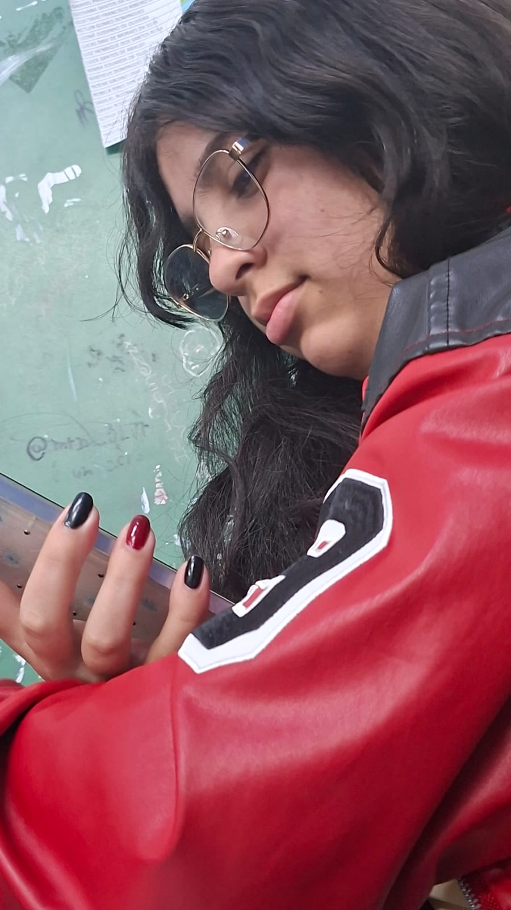
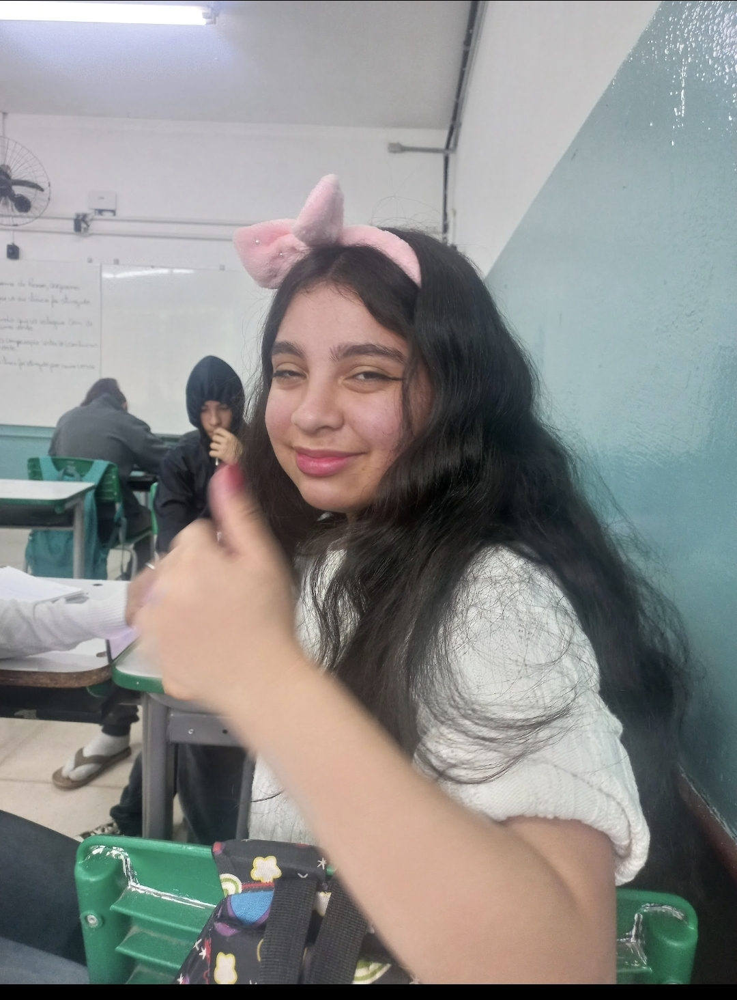

Feliz aniversário, Samaraaaaa!!!
Antes de qualquer coisa, clica na tela pra você ir escutando sua musica favorita.
Hoje o dia é todo seu, e eu não poderia deixar de te dar um parabéns muito especial. Você é uma pessoa incrível, dona de uma energia única e de um sorriso que ilumina qualquer lugar.
Adoro cada momento que passo do seu lado, a sua companhia e o quanto a gente se diverte junto. Como você ama o Homem-Aranha, achei justo ele estar aqui hoje de fundo! Se o Peter Parker teve sorte com a MJ, eu tenho muito mais sorte por ter conhecido você.
Que o seu novo ciclo seja maravilhoso, cheio de conquistas, saúde, felicidade e de muitas risadas (especialmente com essas fotos que deixei espalhadas por aí kkkk). Parabéns por ser exatamente quem você é.
Com carinho, Ruan 🤍